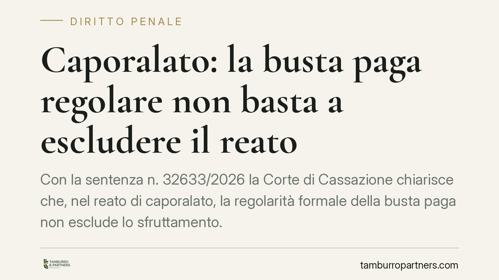

Caporalato: la busta paga regolare non basta a escludere il reato
Con la sentenza n. 32633/2026 la Corte di Cassazione chiarisce che, nel reato di caporalato, la regolarità formale della busta paga non esclude lo sfruttamento. La sproporzione retributiva va calcolata sulle ore effettivamente prestate e gli indici dell'art. 603-bis c.p. vanno letti insieme, non isolatamente. Una pronuncia che ridisegna il perimetro del rischio penale per chi impiega manodopera.

Il caso
La vicenda nasce da un'azienda agricola che impiegava lavoratori stranieri. La difesa dei datori di lavoro puntava su un argomento apparentemente solido: le buste paga erano formalmente in regola, con retribuzioni allineate ai minimi contrattuali.
La Corte d'appello di Venezia, e poi la Cassazione, hanno respinto questa impostazione. Il documento contabile, da solo, non racconta la realtà del rapporto di lavoro. E nel caporalato è la realtà che conta.
Inquadramento normativo
L'art. 603-bis c.p. punisce il reato di "intermediazione illecita e sfruttamento del lavoro", il cosiddetto caporalato. La norma colpisce sia chi recluta manodopera per destinarla al lavoro presso terzi in condizioni di sfruttamento, sia il datore di lavoro che quella manodopera utilizza o impiega approfittando dello stato di bisogno dei lavoratori.
Il secondo comma elenca gli indici di sfruttamento: la reiterata corresponsione di retribuzioni sproporzionate rispetto al lavoro prestato o ai contratti collettivi; la reiterata violazione della normativa su orario, riposo, ferie e aspettativa; le violazioni in materia di sicurezza e igiene; la sottoposizione a condizioni di lavoro, metodi di sorveglianza o alloggi degradanti.
La sentenza n. 32633/2026 affronta due nodi interpretativi. Primo: come si misura la sproporzione retributiva. Secondo: se gli indici debbano ricorrere tutti o basti uno solo.
Il principio: contano le ore reali
Sul primo punto la Corte è netta. La sproporzione tra retribuzione e lavoro prestato si valuta sulle ore effettivamente lavorate, non su quelle indicate nel cedolino.
È una precisazione decisiva. Nella prassi dello sfruttamento, la busta paga può riportare un orario ridotto e una paga apparentemente congrua, mentre il lavoratore presta ben più ore di quelle dichiarate. Il risultato è una retribuzione oraria reale molto inferiore ai minimi. La regolarità formale diventa così uno schermo.
La Cassazione rimuove quello schermo: il giudice deve ricostruire l'orario effettivo e rapportarlo a quanto corrisposto. Se il divario è significativo e reiterato, l'indice di sfruttamento sussiste a prescindere dall'apparenza contabile.
Gli indici non sono tassativi, ma serve convergenza
Sul secondo punto la Corte adotta un equilibrio. Gli indici dell'art. 603-bis non vanno intesi come un elenco rigido: non è necessario che ricorrano tutti.
Allo stesso tempo, non basta un singolo elemento isolato. Serve la convergenza di più indicatori, protratta nel tempo. È la combinazione di segnali — orario abnorme, retribuzione reale sottosoglia, condizioni di alloggio o sicurezza critiche — a configurare lo sfruttamento penalmente rilevante.
In altri termini: un episodio sporadico non fa reato; un sistema che si ripete e somma più violazioni sì.
Implicazioni pratiche
Per chi impiega manodopera, soprattutto nei settori a più alta intensità di lavoro stagionale e straniero, la pronuncia sposta l'attenzione dalla carta ai fatti.
Avere buste paga ordinate è necessario ma non sufficiente. Se la documentazione non riflette l'orario reale, l'impresa resta esposta. E la responsabilità penale può toccare il datore anche quando il reclutamento passa da un intermediario.
Attenzione anche alla dimensione temporale: la reiterazione pesa. Prassi gestionali trascurate per mesi costruiscono, agli occhi del giudice, un quadro di sistematicità.
Sul piano probatorio, cambia molto il valore delle testimonianze dei lavoratori, dei dati di accesso ai luoghi di lavoro, dei turni e delle comunicazioni informali. Elementi che possono smentire il cedolino.
Cosa fare in concreto
- Allineate orario reale e documentazione. Verificate che le ore registrate corrispondano a quelle effettivamente svolte, straordinari inclusi.
- Introducete un controllo periodico sulla retribuzione oraria reale, rapportata ai minimi contrattuali di categoria, non solo sul totale mensile.
- Mappate gli indicatori di rischio previsti dall'art. 603-bis: orario, riposi, sicurezza, alloggi. La convergenza di più criticità è il vero segnale d'allarme.
- Valutate con attenzione gli intermediari a cui vi affidate per il reclutamento: la provenienza della manodopera non deve coprire condizioni di sfruttamento.
- Conservate traccia di turni, presenze e pagamenti in modo coerente e verificabile.
Consigliamo, in presenza di uno o più indicatori, un audit riservato sulle prassi di gestione del personale, prima che siano accertamenti esterni a far emergere le criticità.
Disclaimer
Contributo informativo a cura di Tamburro & Partners - Avv. Giuseppe Tamburro. Non costituisce parere legale.
Ogni condominio ha una storia a sé.
Se gestisci un'amministrazione e vuoi un confronto su una specifica questione condominiale, scrivi allo studio. Ti rispondiamo entro un giorno lavorativo.